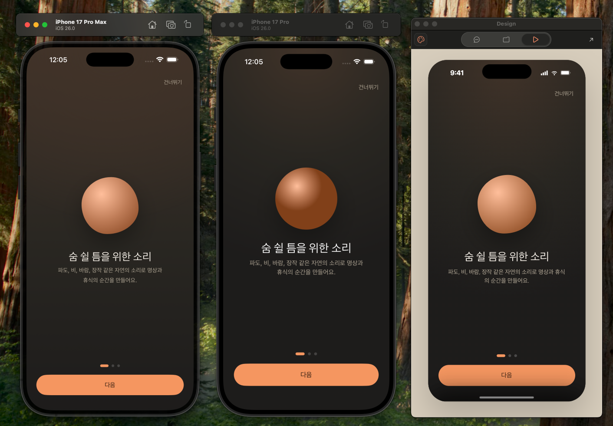
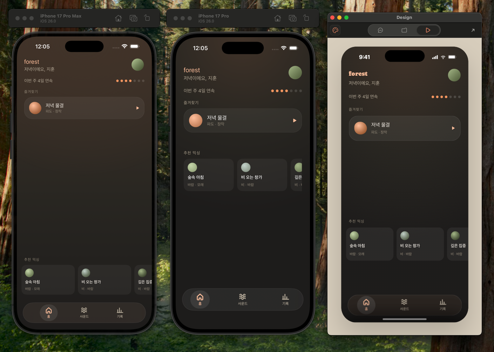
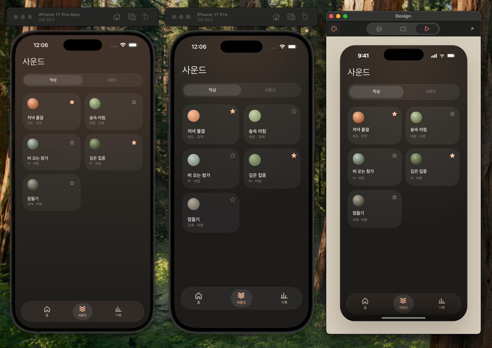
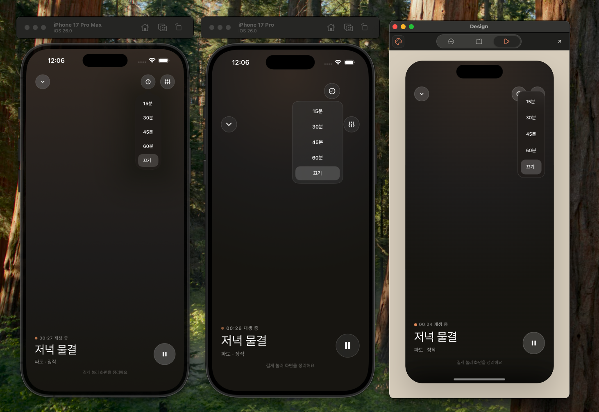
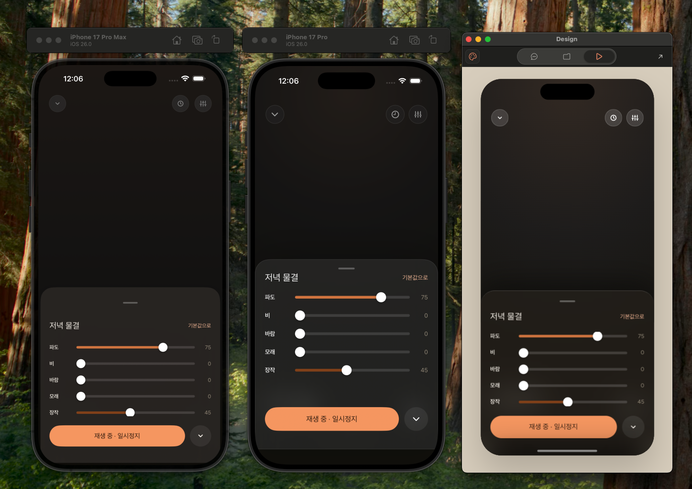

Claude Design이 내보내는 HTML은 브라우저용 프로토타입이라, 구현 에이전트에 그대로 넘기기엔 걸러지지 않은 것이 많았음
화면 5개가 917줄 파일 하나에 상태 분기로 합쳐져 있음
서식이 전부 인라인(style 166개, class 0개)이라 재사용 컴포넌트 개념이 없음
앱에 없는 프로토타입 장식이 섞여 있음 (가짜 상태바 · 홈 인디케이터 · 스마트폰 프레임 · 런타임 JS)
접근
마크다운 기반 '산문'으로 이루어진 Soft 가이드는 일정한 결과를 내기 어려움. 수치화된 문서·산출물을 코드 기반 파이프라인으로 생성하고, 이를 기반으로 에이전트가 자율성을 가지고 개발하도록 함. 각 에이전트는 플랫폼 개발 지식과 파이프라인이 만들어내는 중간 산출물에 접근성을 갖는다.
구현
1. Claude Design의 handoff 패키지를 정제 — HTML → 레이아웃 트리 → 네이티브
같은 요소(gap 20 · 문구 · 색 · 동작)가 HTML → 트리 → SwiftUI · Compose로 어떻게 옮겨지는지. 점선 밑줄 부분에 마우스를 올리면 나머지 코드에서 같은 요소가 함께 표시됩니다.
① Claude Design HTML · design/project/forest.dc.html
이름 없던 문구 · 아이콘 · 동작→ 문구 80 · 아이콘 10 · 핸들러 25 · 컴포넌트 31
프로토타입 장식→ 전달 안 함
2. 서버가 공통 리소스를 각 플랫폼에 맞게 상수 파일로 생성
shared/generated/ 에 같은 내용이 Swift · Kotlin으로 나란히 생성됩니다. 같은 방식으로 ApiRoutes · Screens · DesignTokens · Icons 도 두 언어로 생성됩니다.
Strings.swift
// generated by the server; never edit
public enum Strings {
public enum Home {
public static let chucheonMiksing = "추천 믹싱"
public static let forest = "forest"
public static let ibeonJuIlYeonsok = "이번 주 {streakCount}일 연속"
public static let jeulgyeochatgi = "즐겨찾기"
}
Strings.kt
// generated by the server; never edit
object Strings {
object Home {
const val chucheonMiksing = "추천 믹싱"
const val forest = "forest"
const val ibeonJuIlYeonsok = "이번 주 {streakCount}일 연속"
const val jeulgyeochatgi = "즐겨찾기"
}
결과
같은 화면을 만드는 데 에이전트가 쓰는 비용이 줄었고, 결과물은 더 디자인에 가까워졌습니다.
성능 검증 — Handoff package 정제 전후 A/Bhome · stats × iOS · Android × 2회 = 16회
A · 원본 HTML (57KB)
B · 정제한 레이아웃 트리
토큰 (평균)
90.5k
55.1k−39%
화면 정합성
8번 중 7번 화면을 제 마음대로 바꿈 — 조건부 영역을 항상 표시, 정해진 색 대신 임의 색
빠뜨린 건 추출기가 트리에 안 담은 속성뿐 → 이후 스타일 속성을 전부 담는 무손실 방식으로 개선
같은 화면을 같은 모델로 구현하게 하고 입력만 바꿔 비교. 디자인이 확정된 상황에선 정합성이 우선이라 B를 택해 도입했습니다.
UI / UX 구현 정합성 비교 왼쪽부터 B 레이아웃 트리 · A HTML 직접 변환 · 인터랙티브 프로토타입 · 클릭하면 확대

온보딩 — 버튼 위치·여백이 A에서 프로토타입과 달라짐

홈 — 하단 추천 믹싱 배치와 이미지 스타일 불일치

사운드 — 타이머 드롭다운 시 UI 깨짐

기록 — 하단 SafeArea 및 정렬이 의도와 다르게 구현됨

그 외 — 버튼 터치영역, 바텀시트 핸들 드래그, 스크롤 인디케이터 미숨김
케이스 스터디 2
백엔드 인프라 스펙 문서 만들기
문제
백엔드 인프라 구성은 주요 기능, 예측 사용자 규모, 예산 등에 따라 가변적이라 번거로움이 느껴졌고, 이를 돕는 인터뷰 프로세스가 필요했음. 사용자 니즈를 파악해 과한 서버 구성을 피하기 위함도 있음.
접근
에이전트가 기능과 인터뷰 기반 적정 수준의 인프라 조합을 보기 쉽게 표로 제안하고, 유저는 정해준 조합을 선택하거나 자유롭게 논의해 백엔드 스펙을 구성한다.
구현
인프라 결정 — 4단계 인터뷰, 각 단계가 끝나야 다음으로
1 스택 플랫폼과 백엔드 언어를 후보 2~3개로 좁혀 선택
2 규모 예상 MAU · DAU를 사용자가 대략 입력
3 후보 추리기 12개 조합 중 그 규모에 맞는 5개만 남김
4 요금 조회 공식 요금 페이지만 읽음. 캐시 없이 매번 새로
API 명세
인프라가 정해지면 화면 HTML과 개발 문서를 읽고, 각 화면이 필요로 하는 데이터에서 엔드포인트를 뽑아 openapi.yaml 초안을 생성합니다. 디자인 handoff 패키지가 설계 범위를 결정합니다.
openapi: 3.0.3
info:
title: forest API
description: |
디자인 화면 4개(onboarding · home · sound · stats)와 공유 컴포넌트가
필요로 하는 데이터만 담는다.
범위 밖(디자인에 화면이 없어 만들지 않는다):
- 로그인/회원가입 화면이 없다 → 기기 익명 등록으로 계정을 만들고 JWT 를 발급한다.
- 확장 음원 브라우징 UI 가 없다 → 카탈로그·다운로드 URL 만 제공한다.
- 결제/구독 구매 화면이 없다 → 구독 상태는 읽기 전용, 관리·내역은 외부 링크로 넘긴다.
paths:
/auth/device:
post:
operationId: registerDevice
summary: 기기 익명 등록 — 계정 생성 또는 기존 계정 재획득 후 토큰 발급
결과
월 비용 · 확인일 · 종속성 · 장단점을 싼 값 순으로 정리한 비교표를 세션에서 바로 확인
규모 소규모 (MAU 10,000 · DAU 1,000) 기준으로 후보 조합의 요금을 오늘(2026-09-04) 다시 읽었습니다. 싼 순입니다.
id
db
auth
hosting
월 비용
확인일
종속성
aws-serverless
DynamoDB
Cognito
Lambda + API GW
$0-5
2026-09-04
높음
vps-docker
PostgreSQL (자체)
자체 JWT
VPS (Hetzner)
$4-10
2026-09-04
낮음
firebase
Firestore
Firebase Auth
Cloud Run
$0-10
2026-09-04
높음
railway
PostgreSQL (Railway)
자체 JWT
Railway
$5-25
2026-09-04
낮음
supabase-fly
PostgreSQL (Supabase)
Supabase Auth
Fly.io
$0-30
2026-09-04
중
인터뷰가 끝나면 요약표로 정리되어 다음 단계로 넘어가기 전 사용자에게 세션에서 제공됩니다.
구현 완료 후 백엔드 수정이 필요한 경우, 혹은 임의로 수정한 경우 사용자에게 보고서로 제출하는 프로세스 — 에이전트가 임의로 판단해 수차례 루프를 도는 대신 빠르게 루프를 완료하고 수정 사항을 정리해 다음 루프를 가동하는 게 효율적이라고 판단.
보고서가 필요한 이유: 에이전트의 자율성이 차이를 만들기 때문에 이를 아예 강제하기 어렵고, 설계대로 작성해도 추가 요구사항이 발생할 수 있음은 당연한 일.
케이스 스터디 3
공개 배포 전제 — 시크릿을 파이프라인에 들이지 않기
문제
API 키, 민감 정보가 클라우드 세션과 공개 저장소에 노출될 수 있는 환경 — 읽는 순간 컨텍스트에 실리고 저장소 기록에도 남음.
구현
민감 값을 환경변수로만 관리하여 직접 값이 노출되지 않도록 하고, 민감 값이 담긴 파일을 직접 접근하지 못하도록 훅으로 막는다.
결과
생성된 프로젝트의 공개 저장소, 개발 도중 LLM이 읽은 시크릿 0개 — 환경변수만 노출. 빌더 에이전트들이 결과물을 내면 그 뒤에 실제 민감 정보(인증서, 키 등)를 사용자가 직접 입력하게 유도.
에이전트의 유도 예시
· wrangler.toml 의 REPLACE_WITH_D1_DATABASE_ID
→ `npx wrangler d1 create forest` 로 만든 실제 id 로 교체
· JWT_SECRET 은 Worker 시크릿으로만 넣는다
→ npx wrangler secret put JWT_SECRET (32바이트 이상 랜덤)
→ 저장소에는 자리표시자만 있다
· 배포 전 원격 마이그레이션 적용
→ npx wrangler d1 migrations apply forest --remote